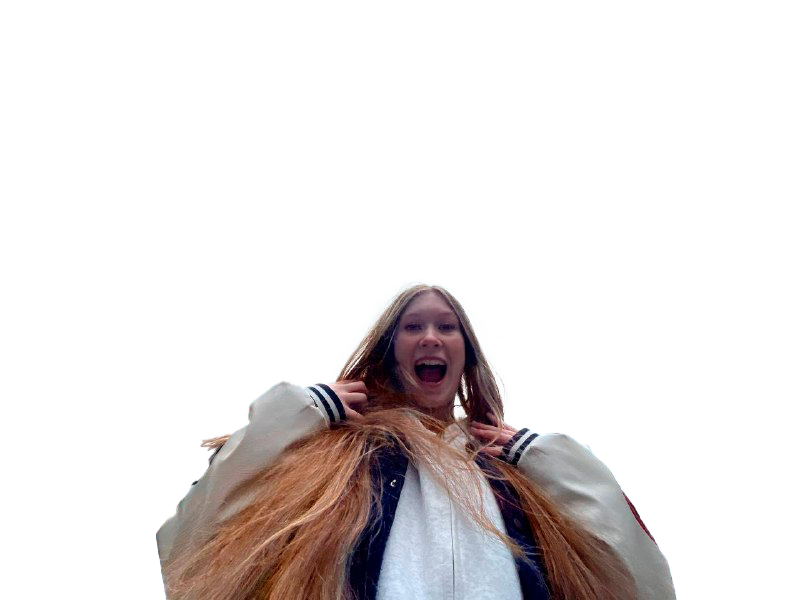

Современный мир невозможно представить без программного кода и грамотно спроектированных баз данных. Сегодня специалисты в области информационных систем создают цифровой фундамент, на котором держится комфорт, безопасность и развитие всего общества.
Информационные системы избавляют людей от многочасовой бумажной волокиты, длинных очередей и сложных ручных расчётов. Электронный документооборот, банковские приложения и государственные порталы позволяют решать повседневные задачи за считанные секунды.
Специалисты по информационным системам разрабатывают медицинские базы данных, системы электронной записи к врачам, платформы телемедицины и алгоритмы анализа диагностических снимков. Это помогает врачам быстрее ставить точные диагнозы и делает качественную медицину доступной даже в небольших городах.
В нефтегазовой отрасли, машиностроении и энергетике программные комплексы контролируют работу оборудования в реальном времени, анализируют показания тысяч датчиков, прогнозируют нагрузки и предотвращают аварийные ситуации на производстве.
Образовательные платформы, интерактивные тренажёры и системы дистанционного обучения стирают географические границы. Любой студент или школьник может получать знания, осваивать новые навыки и общаться с экспертами независимо от того, где он живёт.
Грамотное проектирование архитектуры баз данных, систем авторизации и шифрования защищает личную информацию граждан, медицинские тайны и финансовые средства от утечек и кибератак.
Современные приложения помогают людям с ограниченными возможностями здоровья свободно общаться, учиться и работать с помощью голосовых помощников и адаптивных интерфейсов, а социальные сервисы объединяют волонтёров и активную молодёжь для добрых дел.

Специальность «Информационные системы и программирование» объединяет в себе строгую инженерную логику, аналитику и творческий подход. Проектируя базы данных и разрабатывая удобные интерфейсы, мы напрямую влияем на то, насколько комфортной и безопасной будет жизнь миллионов людей завтра.